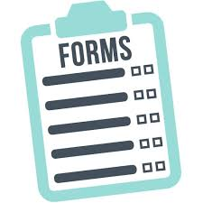

Web Developer Examples and Resources by Sabra Grace
Accessibility Research
Navigating the offline world already poses many challenges (physical and otherwise) for people with disabilities. The digital world offers us the advantage of a more malleable landscape where we can create a parallel world that is more easily navigated for those of us who are differently abled. Accessibility and reflecting the real lives of end users is imperative because ultimately, we build webpages for real people. Especially when the U.S. Census reports that 1 in 5 Americans has a disability.
Building an accessible website is both good for ADA web requirement compliance and profitable for companies. The word “disability” can mean a range of different definitions including the 8.1 million Americans who have difficulty with their sight, of which 2 million people experience blindness. This market share has huge potential if not ignored. Forbes Magazine compares the overlooked market of consumers with disabilities to the pre 1990s era when women were commonly ignored as a consumer class.
The Return on Disability group’s 2016 Annual Report: The Global Economics of Disability shows that this is an emerging market “[...] the size of China [and] influences over $8 trillion in annual disposable income. As this giant market emerges, our team explores opportunities for public companies and governments to add economic value by delighting customers and sourcing the best talent.”
Accessibility is not a concern catering only to a select few of the population. At some point in all our lives, we will each need to use assistive tools. As the digital native generations age, the importance of building websites, apps and tech tools that are accessible for people with disabilities will only grow more important. Even Ryan Taji and Boram, two of the most famous child YouTube influencers will someday need assistive tools to help them access content. Ultimately, designing for good web accessibility is ultimately important for all of us.
Donovan, Rich. “2016 Annual Report: The Global Economics of Disability.” Translate Different Into Value, Return on Disability, 1 May 2016, www.rod-group.com/sites/default/files/2016 Annual Report - The Global Economics of Disability.pdf. Lee, Bruce Y. “An Overlooked And Growing Market: People With Disabilities.” Forbes, 11 Nov. 2016. https://www.forbes.com/sites/brucelee/2016/11/02/an-overlooked-and-growing-market-people-with-disabilities/#262aa3a12ab0 Project Civic Access Toolkit, Chapter 5: Website Accessibility Under Title II Of the ADA https://www.ada.gov/pcatoolkit/chap5toolkit.htmDesigning Forms
Years ago when I opened a music school, like many business owners, I did not know how helpful good form design could be. I was unaware of the ENORMOUS impact that this one, small and simple tool could have on my life as a business owner, and that of my employees. I truly believe that designing good web forms can make your business thrive or flounder.
- Forms streamline work for both your customer and your employees.
- Forms can make initial interactions frustration-free for everyone - you AND your customer!
- Forms make it easier for your to track prospects.
- Forms can organize information for you. And who doesn’t love less work?!
Best of all for CMS, forms are trackable. Forms may not seem exciting, but they will absolutely help you increase your customer conversion rates and profit margins if designed well. As with any tool, you want your forms to be designed well. Good design is a thoughtful form that does not overwhelm prospective customers with too many options that might chase them away or frustrate them. A well designed form will make your new potential customers click the submit button.
The “choice overload” phenomenon is also good to keep in mind when designing your web forms. Choice overload occurs when we are inundated with too many options. Have you ever gone to a restaurant with a menu that makes you feel like you need to buy the Cliff’s Notes version? When designing your website’s form, we will streamline the options to be as clear and simple so that you get the information that you need, and customers will feel like the process of contacting you is easy.
